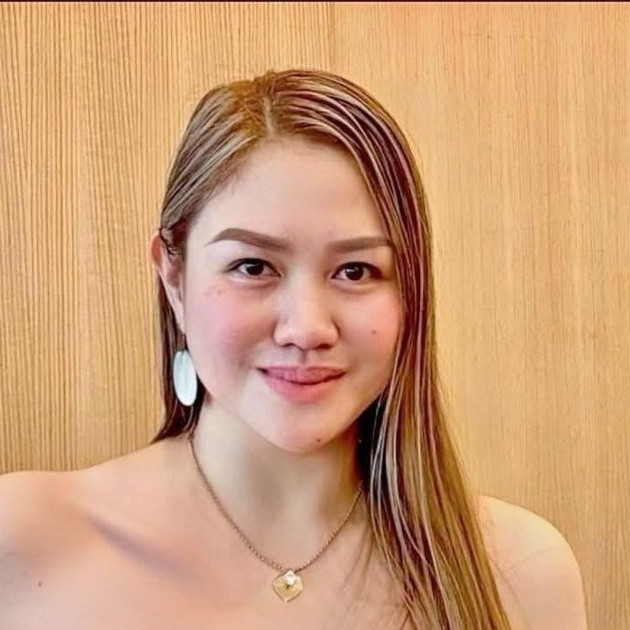

President
Mary Rose Yuchongtian
Club President
Leading the club for Inner Wheel Year 2026–2027 under the themes “Grow & Flourish” and “Reach & Inspire for a better world.”
Leadership · IWY 2026–2027
Dedicated women leading the Inner Wheel Club of Dagupan East in friendship and service.
Club President
Leading the club for Inner Wheel Year 2026–2027 under the themes “Grow & Flourish” and “Reach & Inspire for a better world.”

Club Secretary
Serving as Club Secretary for IWY 2026–2027, supporting the club’s fellowship and service activities.
| President | Mary Rose Yuchongtian |
| Vice President | Rhazzle Coquia |
| Secretary | Christalle Claire Enrile |
| Assistant Secretary | Marife Estrada |
| Treasurer | Therese Ann Cua |
| Assistant Treasurer | Michelle Ann Yuchongtian |
| Immediate Past President | Mary Christine Paragas |
Officers of the Inner Wheel Club of Dagupan East are elected or appointed according to the club’s constitution and the guidelines of the Inner Wheel Clubs of the Philippines, Inc. They serve for a term (typically one Inner Wheel Year) and guide the club’s fellowship activities, service projects, and representation at district and national levels.
The current officers serve for Inner Wheel Year 2026–2027 under the International Inner Wheel theme “Grow & Flourish” and the IWCPI theme “Reach & Inspire for a better world.”